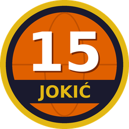

Sledeća utakmica
Vreme je prikazano po satu tvog uređaja.
Statistika sezone
Poslednja utakmica
Sve utakmice
Klikni na utakmicu označenu sa ▸ za detaljnu statistiku.

Denver Nuggets · statistika utakmica
Vreme je prikazano po satu tvog uređaja.
Klikni na utakmicu označenu sa ▸ za detaljnu statistiku.